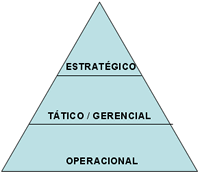
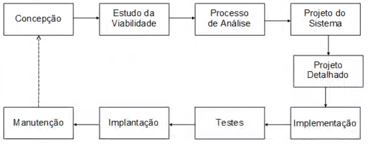

🚧 Capítulo 1 - Cronologia e Introdução
Antes de começar a estudar a análise de sistemas da informação é necessário entender alguns conceitos inciais.
Dados x Informações:
Dados são conjuntos de valores armazenados em algum lugar, sem tratamento.
Informações são dados organizados/ordenados/processados que significam algo e tem utilidade para a tomada de decisão. A qualidade da informação deve ser definida pelos seguintes aspectos:
- Prontidão
- Aceitação
- Frequência
- Período
- Precisão
- Relevância
- Integridade
- Concisão
- Amplitude
- Desempenho
- Clareza e Detalhe
- Ordem
- Apresentação
- Mídia
Conhecimento é a informação valiosa, acumulada e verificada por muito tempo.
Organização Empresarial
A organização de qualquer empresa é feita em setores ou departamentos com objetivos diferentes porém sempre visando o LUCRO.

A administração da empresa pode ser dividida em:
- Estratégico: alto escalão, dá as mais importantes decisões
- Tático: escalão intermediário, decisões de menor impacto
- Operacional: baixo escalão, decisões do dia a dia.
Sistemas de Informação nas Empresas
Os sistemas da informação recolhem, processam, armazenam, distribuem informação para apoiar a tomada de decisão das empresas.
Eles possuem muita informação sobre o ambiente do sistema, podendo ser definido como o conjunto de fatores que interferem no sistema de dentro e de fora.
O Analista de Sistemas
É o responsável por fazer a Análise de Sistema, deve entender e avaliar as necessidades de um sistema e dizer se essas são estão sendo cumpridas, para atender a expectativa do cliente para a melhor implantação/criação/implementação de um sistema.
🚧 Capítulo 2 - Fases do Desenvolvimento do SI
O software bem produzido deve ser fácil de usar e atender as necessidades do cliente/usuário e proporcionar melhorias em relação ao funcionamento empresa, agregando valor na empresa com melhorias.
A produção de SI começa com uma ideia básica para melhorar o desempenho de uma tarefa, normalmente os analistas de sistemas trabalham nesse âmbito.
Exemplo: em uma empresa como uma pequena farmácia as regras de negócio são fáceis, porém em uma rede de farmácia multinacional o controle desse sistema seria muito mais complexo
🚧 Fases do desenvolvimento de um SI:
Para a criação de um software a equipe de desenvolvimento deve seguir uma série de etapas, permitindo a produção de forma estruturada e organizada.

Concepção do SI
Fase inicial sem detalhes, o analista deve fazer um entendimento das necessidades e custos. Produção de um relatório ao final das reuniões, que estima prazo, levantamento de soluções...
Estudo da viabilidade
Estudo dos custos e benefícios para avaliar se a produção do software vale a pena. Algumas vezes é mais viável comprar um software pronto do que desenvolver o mesmo( viabilidade técnica + viabilidade econômica).
- Viabilidade técnica consiste da cultura e organização do cliente, da familiaridade dos usuários com a TI e a aceitação de novas tecnologias.
Processo de Análise
Levantamento minucioso de dados e fatos para descobrir o que precisa ser feito pelo sistema. A equipe de análise de sistemas vai:
- Ouvir o usuário;
- Trocar sugestões;
- Atentar para sua expectativa;
- Avaliar a realidade cotidiana da organização.
Deve existir uma grande sintonia entre usuário e a equipe de análise. O problema deve ser resolvido de uma vez por todas.
Stalkeholder: pessoa com interesse pelo projeto.
É indispensável levantar todos os fatores que podem gerar informações importantes para tomada de decisão, esse levantamento pode se dar por meio de:
- Pesquisas em documentos;
- Entrevistas com usuários / futuros usuários;
- Análise de arquivos da empresa, etc.
Esse levantamento recebe o nome de Coleta e Análise de Requisitos que gera um relatório(que pode ser mudado/revalidado) contendo: listagem de objetivos, funcionamento do sistema, métodos de atualização, prazo, modelo lógico...
Projeto de Sistema
Fase em que são buscadas alternativas de solução, apresentando relatórios para cada alternativa listando custos e benefícios de cada uma, diagrama de casos de uso, tipos de banco de dados, layouts, especificações...
Projeto Detalhado
Ao concluir o projeto do sistema